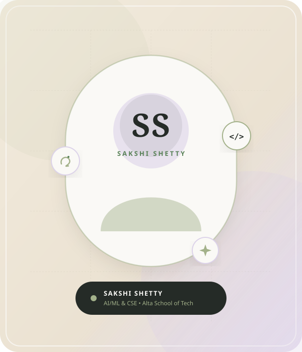

Building ideas.
Exploring possibilities.
I'm Sakshi Shetty — a Computer Science student exploring AI, software development and creative technology.

Sakshi Shetty
Computer Science Student • Pune, India
A little about me.
"Hey, I'm Sakshi — a second-year Computer Science engineering student exploring the intersection of technology, creativity and innovation."
I enjoy building meaningful projects, experimenting with new technologies and continuously challenging myself to become a better developer.
From developing AI-powered solutions to creating interactive experiences, I love turning ideas into things people can actually use.
Currently learning, building and figuring out how to make technology a little more interesting.
"I believe the best way to learn technology is to build something with it."
— Sakshi Shetty
My Tech Stack
Technologies and tools I have worked with in projects or am actively learning.
Programming
Core languages used for problem solving and algorithms.
Web Development
Semantic markup, styling and web server runtimes.
AI/ML and Data
Data analysis, vision tracking and machine learning fundamentals.
Backend and Tools
Databases, APIs, development environments and version control.